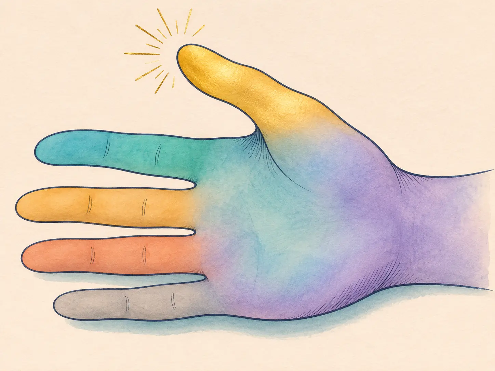

التدريب على منهج سلّم اليد
معلمة في الصف الثالث. ولد رمى مقلمة زميله من النافذة، والصف كله يضحك. هي تعرف أن الصراخ لن يصلح شيئًا، لكن ماذا تقول الآن؟ وماذا تفعل بعد الحصة حتى لا يتكرر المشهد غدًا؟
على لحظات مثل هذه نتدرّب معكم. نأتي بمواقفكم أنتم، من البيت أو الصف أو الروضة، ونعيدها في القاعة مرة بعد مرة، حتى تجد الجملة المناسبة طريقها إليك وقت الحاجة.

كيف يمضي لقاء التدريب
نبدأ بموقف حدث في أسبوعكم، تحكيه أم أو معلم دون ذكر أسماء. نشرح الفكرة التي تحته في ربع ساعة تقريبًا، ثم نقوم من الكراسي. يمثّل اثنان الموقف، ويلاحظ ثالث ويكتب ما رأى. كثيرًا ما يتلعثم الأب حين يقول الجملة أول مرة، فيعيدها بصوت أهدأ. وفي آخر اللقاء يأخذ كل واحد تمرينًا صغيرًا للبيت، ويحكي في اللقاء التالي ما جرى معه.
ونبدأ دائمًا بالكبير. الأم التي تريد أن يهدأ ولدها حين يغضب تتمرّن على غضبها هي قبله.
- حضوريًّانفضّله
التمرين يحتاج قاعة يتحرك فيها الناس ويسمع بعضهم بعضًا، ويرى فيها المدرّب وجه من يقول الجملة. نأتي إلى مؤسستكم، أو نلتقي في قاعة نتفق عليها، والمجموعة بين اثني عشر وخمسة وعشرين شخصًا.
- يوم حضوري ثم متابعة عن بُعد
إن كانت مدينتكم بعيدة نلتقي يومًا كاملًا، ثم نكمل في لقاءات قصيرة عبر الإنترنت.
- عن بُعد
البرامج كلها تُقدَّم عبر الإنترنت أيضًا، بالعربية أو بالإنجليزية. الكاميرات مفتوحة، ونتمرّن في غرف صغيرة من ثلاثة أشخاص.
من يأتي إلى التدريب
الوالدان مع أبنائهم
الطعام على النار، والصغير يبكي لأن أخاه أخذ لعبته، والأب عائد متعبًا من عمله. في هذا البيت نلتقي خمس مرات، كل أسبوع لإصبع، ويرجع الوالدان من كل لقاء بعادة صغيرة واحدة. وبين اللقاءات يمشي الوالد مع ولده في تطبيق تزكية. ونختم بصباح للأسرة كلها، يرسم فيه كل طفل حول يده، ويكتب مع أهله اتفاق بيتهم.
برنامج اليد للوالدين: خمسة لقاءات أسبوعية، ثم يوم اليد للأسرةراسلنا عن برنامج الوالدينوالدا المراهقين
ابنك في الخامسة عشرة يغلق باب غرفته والهاتف في يده، ولا تعرف من أين يبدأ الحديث. نتكلم في أربعة لقاءات عن المجموعة التي يعيش معها في هاتفه، وعن رغبته في المزيد، وعن جسده الذي يتغير، وعن غضبه حين يريد أن يثبت أنه كبر. ويكتب كل والد لكل موضوع جملة أولى يفتح بها الباب. ويحضر الأبناء اللقاء الخامس.
حوار الدوافع: أربعة لقاءات، والخامس مع الأبناءراسلنا عن حوار الدوافعالمعلمون
حين يضحك الصف كله على تلميذ واحد يكون أمام المعلم ثوانٍ قليلة. نتمرّن على هذه الثواني خطوة خطوة: يوقف الضحك بهدوء، ويقف إلى جانب من سُخر منه، ثم يجلس بعد الحصة مع من بدأ. ويخرج كل معلم بخطة درس من مادته يحمل فيها خُلقًا، وباجتماع صف قصير كل أسبوع.
اليد في الصف: يومان، ولقاء متابعة بعد أربعة أسابيعراسلنا عن تدريب المعلمينمسؤولو الطفولة
في الروضة يجلس عشرون طفلًا جائعًا إلى الطعام في وقت واحد. في هذا العمر يتربّى الطفل في الطعام والنوم والترتيب وانتظار دوره. نعمل معكم على يوم الطفل في الحضانة أو الروضة أو المخيم كما هو، وعلى ما تفعله المربّية في الدقائق الأولى من نوبة غضب، ونكتب معكم صفحة واحدة تحفظ كرامة كل طفل في المكان.
الطفولة الأولى على اليد: يومانراسلنا عن تدريب مسؤولي الطفولةالمرشدون
يجلس الولد أمامك ولا يريد أن يتكلم. تسأله: «أين يدك الآن؟». من هذا السؤال نتدرّب على محادثة من خمس خطوات، ثم على لقاء الأهل بعدها. ونتعلم معًا متى يحتاج الطفل مختصًّا مرخّصًا، وكيف يُحال إليه.
الإرشاد بلغة اليد: ثلاثة أيام، وجلستا إشراف بعدهاراسلنا عن برنامج المرشدينالمسؤولون عن التكوين البيداغوجي والمشرفون
إن أردتم أن يقدّم المنهجَ مدرّبون من مؤسستكم، نعدّهم معكم. بعد خمسة أيام من الإعداد يقدّم كل واحد منهم لقاءين لمجموعة حقيقية، ونحضر معه. ويتعلم المشرف أن يدخل صف المعلم ويلاحظ بمقياس بسيط، ثم يجلس معه بعد الحصة.
إعداد مدرّبي المنهج والمشرفين: خمسة أيام، وتطبيق في الميدانراسلنا عن إعداد المدرّبين
وإن كان عندك موقف واحد في البيت أو الصف وتريد أن تفكر فيه مع مدرّب، اطلب جلسة فردية مدتها نصف ساعة عن بُعد.
الفكرة التي ندرّب عليها
كان عمر بن أبي سلمة رضي الله عنه غلامًا يعيش في بيت النبي صلى الله عليه وآله وسلم. جلس إلى الطعام، فأخذت يده تتنقل في الإناء من جهة إلى جهة. يحكي هو بعد أن كبر:
فقال لي رسول الله صلى الله عليه وآله وسلم: «يا غلام، سمِّ الله، وكل بيمينك، وكل مما يليك». فما زالت تلك طِعمتي بعدُ. (البخاري 5376)
قيلت الكلمات له وحده، والطعام ما زال أمامه، فبقيت عادته طول عمره. ومن هذا المشهد يبدأ المنهج.
في كل طفل دوافع خلقها الله لخير: جوع يحفظ جسده، ورغبة في المزيد تدفعه إلى أن يتعلم ويبني، وغضب يدافع به عن نفسه وعمّن يحب، وحاجة إلى جماعة يكون منها. يظهر الوجه الآخر للدافع حين يأخذ أكثر من حقه، أو حين يمضي إلى غير وجهته. الولد الذي يكذب خوفًا من العقاب يريد أن يسلم، وهذا من حقه، لكنه أخذ إلى السلامة طريقًا خاطئًا.
لذلك يتعلم المربّي في التدريب أن يسأل أمام أي سلوك: كم أخذ هذا الدافع؟ وإلى أين يتجه؟ ثم يمشي مع الطفل إلى الإصبع التي فوقها، برفق وعلى مهل.
للمدارس والجمعيات والشركات
نصمّم لكل مؤسسة برنامجها، من جمهورها ومواقفها. نعمل مع المؤسسات بأجر، ونقدّم بعض البرامج للمجتمع خدمةً عامة.
في الشركات كثير من الموظفين آباء وأمهات، ولهم ورشة عن الدوافع في العمل وفي البيت: الغضب الذي يبدأ في الاجتماع ويصل إلى البيت مساءً، والطموح حين يأخذ وقت الأولاد. وللمساجد والجمعيات برنامج للأسر في رمضان، فالصوم أوضح تمرين على الدافع عرفه المسلمون.
- تراسلوننا على واتساب: من سيحضر، وكم عددهم، وفي أي مدينة أنتم.
- نلتقي عن بُعد لقاءً قصيرًا، نسمع فيه ما يحدث عندكم، ونسأل عن أعمار الأطفال وأصعب المواقف.
- نرسل إليكم عرضًا مكتوبًا فيه البرنامج ومدته وتكلفته.
- بعد التدريب يصلكم تقرير مختصر لا يذكر أسماء المتدرّبين، ونعود إليكم بلقاء متابعة بعد أسابيع.
اطلبوا برنامجًا لمؤسستكم، أو اسألونا عمّا يناسبكم.
اطلب برنامجًا عبر واتسابأسئلة يسألها الناس
هل يحصل المتدرّب على شهادة؟
من يتمّ البرنامج ينال شهادة إتمام من مؤسسة تمسك للبحوث والنشر والتدريب. ويقدّم التدريب مدرّبو المؤسسة على المنهج.
هل تُصوَّر الجلسات أو تُسجَّل؟
لا تُصوَّر ولا تُسجَّل إلا بإذن مكتوب. وما يحكيه الناس عن بيوتهم يبقى في القاعة، والمواقف التي نتمرّن عليها بأسماء وهمية.
وإن احتاج أحد أكثر مما يقدّمه التدريب؟
التدريب تربوي وأخلاقي. من احتاج رعاية نفسية أو طبية، أو كان في خطر، يحيله المدرّب إلى مختص مرخّص أو إلى خدمات الطوارئ.
هل يحضر الأطفال التدريب؟
يحضرون يوم الأسرة مع والديهم، ويحضر المراهقون اللقاء الأخير من حوار الدوافع. ولا يُدرَّب طفل دون والديه، ولا تُنشر صور الأطفال.
Training in the Tazkiya Hand Method
A Year 3 teacher. A boy has just thrown a classmate's pencil case out of the window, and the whole class is laughing. She knows shouting won't fix anything. But what does she say right now? And what does she do after the lesson so that tomorrow goes differently?
Moments like this are what we practise with you. We work from your own situations, at home, in class or in the nursery, and go through them again and again in the room, until the right words come to you when you need them.
What a training session looks like
We start with something that happened in your week, told by a mother or a teacher without names. We spend about a quarter of an hour on the idea underneath it, and then we get up. Two people act the scene out while a third watches and takes notes. A father often stumbles over the sentence the first time, and says it again more calmly. At the end, everyone leaves with a small exercise for home, and tells the group how it went next time.
We always begin with the adult. A mother who wants her son to calm down when he is angry practises on her own anger first.
- In personour first choice
Practice needs a room where people can move and hear one another, and where the trainer can see the face of the person saying the words. We come to your institution, or meet in a venue we agree on, in groups of twelve to twenty-five.
- One day in person, then online
If your city is far away, we meet for a full day, then carry on in short online sessions.
- Online
Every programme also runs online, in Arabic or English. Cameras stay on, and we practise in small rooms of three.
Who comes to the training
Parents, with their children
Dinner is on the stove, the little one is crying because his brother took his toy, and his father has just come home tired. For homes like this one we meet five times, a finger each week, and parents leave each session with one small habit. Between sessions, the parent goes through the Tazkiya app with their child. We finish with a morning for the whole family, where each child draws round their hand and writes the family's agreement with their parents.
The Hand programme for parents: five weekly sessions, then a Hand day for the familyMessage us about the parents' programmeParents of teenagers
Your fifteen-year-old shuts the bedroom door with the phone in hand, and you don't know where to start. Over four sessions we talk about the group he lives with on his phone, his wish for more, a body that is changing, and the anger that comes when he wants to show he has grown up. Each parent writes an opening line for every topic. The teenagers join the fifth session.
Talking about drives: four sessions, and a fifth with the teenagersMessage us about Talking about drivesTeachers
When the whole class laughs at one pupil, the teacher has a few seconds. We practise those seconds step by step: stopping the laughter quietly, standing by the child who was mocked, and sitting down after the lesson with the one who started it. Every teacher leaves with a lesson plan from their own subject that carries a virtue, and a short weekly class meeting.
The hand in the classroom: two days, and a follow-up four weeks laterMessage us about teacher trainingEarly-childhood staff
In a kindergarten, twenty hungry children sit down to eat at the same moment. At this age a child is brought up through meals, sleep, tidying up and waiting for a turn. We work with you on the child's actual day in the nursery, kindergarten or camp, on what a carer does in the first minutes of a tantrum, and together we write a single page that protects every child's dignity there.
Early childhood on the hand: two daysMessage us about early-childhood trainingCounsellors
A boy sits in front of you and won't talk. You ask him, "Where is your hand now?" From that question we practise a five-step conversation, then the meeting with the parents that follows it. We also learn together when a child needs a licensed specialist, and how to refer them.
Counselling in the language of the hand: three days, and two supervision sessions afterwardsMessage us about the counsellors' programmeHeads of teacher training and supervisors
If you would like trainers from your own institution to deliver the method, we prepare them with you. After five days of preparation, each of them runs two sessions for a real group, with one of us in the room. Supervisors learn to sit in a teacher's class with a simple observation scale, and to talk it through with the teacher afterwards.
Preparing trainers and supervisors: five days, and practice in the fieldMessage us about training trainers
If there is one situation at home or in class you would like to think through with a trainer, ask for a one-to-one session, half an hour online.
The idea behind the training
Umar ibn Abi Salama was a boy living in the household of the Prophet, peace and blessings be upon him and his family. He sat down to eat, and his hand wandered all over the dish. He told the story himself when he was grown:
The Messenger of Allah said to me: "Boy, say Allah's name, eat with your right hand, and eat from what is in front of you." And that remained my way of eating ever after. (al-Bukhari 5376)
The words were said to him alone, with the food still in front of him, and they stayed with him all his life. The method starts from that scene.
Every child has drives that Allah created for good: hunger that keeps the body alive, a wish for more that pushes them to learn and build, anger to defend themselves and the people they love, and a need for a group to belong to. A drive shows its other face when it takes more than its share, or heads somewhere it shouldn't. A child who lies for fear of punishment wants to be safe, which is fair enough, but has taken the wrong road to get there.
So in training, adults learn to ask two questions about any behaviour: how much is this drive taking, and where is it heading? Then they walk with the child to the next finger up, gently, and without hurry.
For schools, associations and companies
We design each institution's programme around its own people and situations. We work with institutions for a fee, and offer some programmes to the community as a public service.
Many employees are parents, so for companies there is a workshop on drives at work and at home: the anger that starts in a meeting and reaches the house in the evening, and ambition when it eats into time with the children. For mosques and associations there is a Ramadan programme for families, since fasting is the clearest training of a drive Muslims know.
- Message us on WhatsApp: who will attend, how many, and which city you are in.
- We meet briefly online, listen to what is happening with you, and ask about the children's ages and the hardest moments.
- We send a written proposal with the programme, its length and its cost.
- After the training you receive a short report that names no trainee, and we come back for a follow-up session a few weeks later.
Ask for a programme for your institution, or ask us what would suit you.
Ask for a programme on WhatsAppQuestions people ask
Is there a certificate?
Everyone who completes a programme receives a certificate of completion from the Temessek Foundation for Research, Publishing and Training. Training is delivered by the foundation's trainers in the method.
Are sessions photographed or recorded?
Only with written permission. What people tell us about their homes stays in the room, and the situations we practise use made-up names.
What if someone needs more than training can give?
The training is educational and moral. When someone needs psychological or medical care, or is in danger, the trainer refers them to a licensed specialist or to emergency services.
Do children attend?
They come to the family day with their parents, and teenagers join the last session of Talking about drives. No child is trained without their parents, and no photos of children are published.